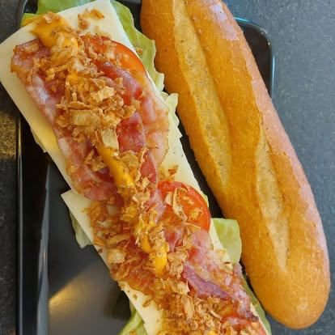
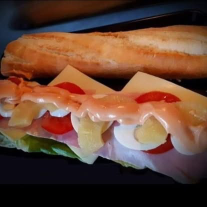
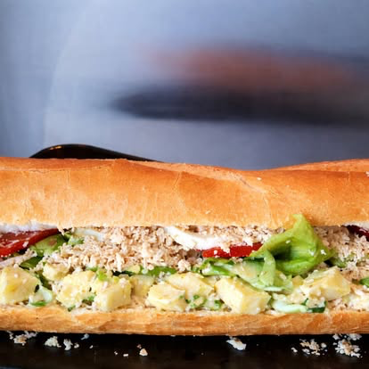

Martino
Prepare, ui, mosterd, ketchup & augurk
Turnhout · sinds 1992
Kom langs voor een royaal broodje, een warme croque of een burger zoals je hem graag eet. Bestel vooraf en haal makkelijk af.
Recht uit de toonbank
Een paar echte Piccolo-favorieten. Kom langs of bel vooraf, dan staat je bestelling klaar.
Bel en bestel ↗


Een kleine zaak met een grote goesting
Piccolo is de plek waar Turnhout langskomt voor een broodje zoals het hoort: vers, royaal en met een glimlach erbij. Wij kennen onze klassiekers, maar blijven graag verrassen.
Volg ons op Facebook ↗Tot straks?